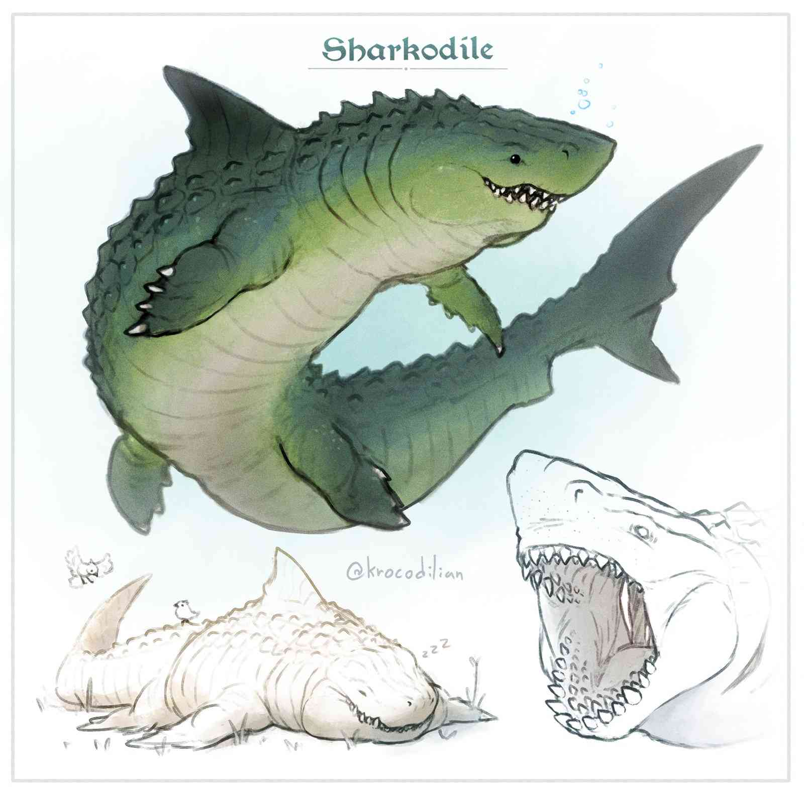

Drogan
Goliath Druid, level 6 · swamp shapeshifter · tank · healer
TL;DR — what this character is
Every number on this page already includes all your bonuses (staff, proficiency, everything). Just roll what it says and add what it says.
Your job, in three bullets:
- Start fights as a caster. Drop Heat Metal on one dangerous armored enemy, or Tidal Wave on a cluster. Your save DC of 17 is brutally high — enemies will fail.
- Then turn into a monster. Wild Shape into the Sharkodile (or the Giant Toad against hard hitters) and bite, grapple, and drag people into the water. Beast hit points are a free shield stacked on top of your 57.
- Keep everyone alive. Healing Word stands a fallen ally back up from 60 feet away, goodberries wake the dying, and Aura of Vitality refills the whole party after a fight.
Out of combat you're the party's nature Swiss-army knife (free ritual magic, animal spies, scouting shapes). In conversations you're the big quiet one — Charisma 7 means you let others do the talking.
Druid crash course
A druid is a nature priest: spells powered by Wisdom (yours is 21 — exceptional, the reason your magic is so accurate), plus the signature trick of transforming into animals. Here is everything you need to know to operate one.
Spell slots = your fuel
Casting a leveled spell spends one spell slot of that spell's level or higher. You have:
| Slot level | How many | What you'll mostly spend them on |
|---|---|---|
| Level 1 | 4 | Healing Word (keep people standing), Ice Knife |
| Level 2 | 3 | Heat Metal, Lesser Restoration |
| Level 3 | 3 | Tidal Wave, Aura of Vitality, or upcasting |
Casting a spell using a higher slot than its level ("upcasting") usually makes it stronger — each spell card below says how. Slots refill after a long rest (8 hours). Cantrips (Water Whip, Primal Savagery, Druidcraft) are free and unlimited — when in doubt, cast a cantrip.
This is a one-shot with 3 fights at most — don't hoard slots. An unspent level-3 slot at the end of the night was wasted.
Concentration — the one-at-a-time rule
Spells marked C stay active only while you concentrate. The rules:
- You can concentrate on only one spell at a time. Casting a second one instantly ends the first.
- If you take damage while concentrating: roll a Constitution save (you: +4) against DC 10, or half the damage taken if that's higher. Fail = spell ends.
- Your concentration spells: Heat Metal, Aura of Vitality, Detect Magic, Beast Sense, Dancing Lights. They are mutually exclusive — plan around it.
- Stone's Endurance reduces the damage you take, which keeps those save DCs low. Synergy.
Rituals — free magic when you have 10 minutes
Spells marked ritual can be cast by taking 10 extra minutes without spending a slot. Yours: Detect Magic, Beast Sense, Air Bubble. Out of combat, always ritual-cast these — never pay a slot for them.
Wild Shape 101 — your second health bar
- On your turn, use your action to become one of your 4 beasts. You have 4 charges per day (your DM's homebrew — by default it's 2 per short rest, see DM questions).
- A form lasts up to 3 hours, or until you end it (a bonus action) or it runs out of hit points.
- You take over the beast's body: its HP, AC, attacks, speed, and senses. It's a brand-new health bar sitting on top of yours.
- When the beast form drops to 0 HP, you pop back to your normal form with the HP you had before — leftover damage spills onto your real HP. Until then, your 57 HP is untouched.
- You keep your mind: Intelligence, Wisdom and Charisma stay yours (your Wisdom save is still +8), and you keep usable traits — Stone's Endurance works in beast form.
- You cannot cast spells or speak while transformed. But a concentration spell you cast before transforming keeps running — and most DMs let you use its bonus-action effects (Heat Metal pulses, Aura of Vitality heals) in beast form, because that isn't casting. This is your best combo — confirm it with your DM.
- Your gear either melds into the new body (no effect while shaped) or drops to the ground — your choice each time.
What you can do in one round
Every combat round you get: Movement + one Action + maybe one Bonus action + one Reaction (usable on other people's turns).
| Drogan's usual options | |
|---|---|
| Action | Cast most spells · Wild Shape · attack (beast Multiattack / staff / Primal Savagery) · Dash · feed a goodberry |
| Bonus action | Healing Word · Heat Metal pulse (2d8) · Aura of Vitality heal (2d6) · revert from beast form · Charger attack after Dashing |
| Reaction | Stone's Endurance (reduce damage 1d12+4) — or an opportunity attack. One reaction per round: when in doubt, save it for Stone's Endurance. |
The "no metal" thing
Druids won't wear metal armor or shields (tradition, not a curse). Your gear is already druid-legal — just don't loot a knight's breastplate and put it on.
Your kit — race, feat, items
⛰️ Goliath traits
- Mountain Born — cold resistance. You take half damage from cold, always, in any form.
- Stone's Endurance Reaction — when you take damage, reduce it by 1d12 + 4 (about 10 on average). 3 uses per long rest. Works in beast form. Use it on scary hits, to protect concentration, or to keep a beast form alive one more round.
🏃 Charger (feat)
When you take the Dash action, you may make one melee attack as a bonus action. If you moved 10+ ft in a straight line right before it: +5 damage, or instead shove the target 10 ft. Works in beast form — a Sharkodile torpedoing 60 ft through water into a bite is 3d10+10, and the shove version pushes people off ledges and into the water. Use it to close distance on round one or to run down fleeing enemies.
🦷 Crocodile teeth staff
Melee: +6 to hit, 1d6+3 bludgeoning + 1d4 piercing (1d8+3 with two hands). It's also your spell focus and grants +1 spell save DC and +1 spell attack — already counted in your DC 17 / +9. Honestly, Primal Savagery (2d10) out-damages it; the staff is for opportunity attacks and Charger shoves.
🌿 Moss tunic
Regain 2 HP at the start of each of your rounds. Small in a fight, huge between fights — a few calm minutes and you're back to full. Don't panic at low HP once combat ends. (Likely melds — i.e. inactive — while wild shaped; ask your DM.)
🌙 Moonstone necklace
Cast Light and Dancing Lights for free. You're the party's torch. Careful: Dancing Lights needs concentration — drop it before casting Heat Metal.
🫐 Goodberries ×10
Eating one (an action) restores 1 HP and feeds a person for a day. 1 HP sounds like nothing, but it turns a dying, unconscious ally into a conscious, standing one — feed berries to downed friends when Healing Word is out of reach. They don't come back after use: 10 for the whole session.
Ability scores & saves
| STR | DEX | CON | INT | WIS | CHA | |
|---|---|---|---|---|---|---|
| Score | 17 | 14 | 19 | 11 | 21 | 7 |
| Checks | +3 | +2 | +4 | +0 | +5 | −2 |
| Saves | +3 | +2 | +4 | +3 | +8 | −2 |
Bold = proficient. Passive Perception 15. No skill proficiencies were listed in your notes — ask your DM which you have (Perception/Athletics/Animal Handling would fit).
The gameplan
Think of Drogan as having four modes. A typical fight: one round of Opener, then Beast mode until things die, with Healer mode interrupts whenever a friend drops.
① Opener — round one, still on two legs
- Several enemies clumped together? → Tidal Wave (level 3). A 30×10 ft wave anywhere within 120 ft: DC 17 Dex save, 4d8 damage and knocked prone. Prone enemies attack at disadvantage, and everyone (including your future beast self) attacks them with advantage. No concentration — combos with everything.
- One dangerous enemy in metal armor or holding a metal weapon? → Heat Metal (level 2, reflavored to freezing cold). Their armor frosts over: 2d8 cold automatically — no attack roll, no save — and every later round you pulse another 2d8 as a bonus action. Holding it: DC 17 Con or they drop their weapon. Wearing it: disadvantage on attacks. A knight has no answer to this.
- Enemies far away / small fight? Don't waste slots — Water Whip (+9, 2d8) or Ice Knife at a clump.
- Then next round: Wild Shape (your action) and wade in. If enemies start in your face, skip the spell and shape immediately — that's fine too.
② Beast mode — the main act
Which form when:
- 🦈 Sharkodile — your default. Best damage (~35 per round, level with a fighter), 60 HP buffer, every physical hit hurts it 2 less. In or near water it's unbeatable: swim 60 ft, blindsight. The signature play: bite the enemy healer/archer — on a hit they're grappled and restrained (DC 16 to escape; everyone hits them with advantage, they attack with disadvantage) — then swim away with them in your jaws. If there's deep water, dive: they're blind and drowning, you're neither.
- 🐸 Giant Toad — the wall. Against ogres, knights, anything swinging big weapons: it resists weapon damage (bludgeoning/piercing/slashing at half!) — effectively ~78 HP against martial enemies, tougher than the Sharkodile into big hits. Leap 20 ft into the fray, bite (plus 1d10 poison), and Swallow a Medium-or-smaller grappled enemy: they're inside you — blinded, restrained, 3d6 acid per round, beyond their friends' help. You literally remove a cultist from the fight. It also glows (bioluminescent) — built-in lantern.
- 🦎 Giant Salamander — scout & chase, not a brawler. Fastest form (45 ft + climb + burrow + swim), darkvision. Its Ballistic Tongue grabs from 25 ft and yanks the target to you — pull the archer off the ledge, pull an enemy off your wizard, snag gear across a chasm.
- 🐊 Crocodile — the budget shape. Only 19 HP. Float like a log to ambush, hold breath 15 min, ferry a friend across the river. Don't spend it expecting to tank.
Charge budget (4/day): roughly 2 for the big fight, 1 for an earlier fight, 1 spare for scouting or emergencies. And remember: a fresh form is an extra life — if you're at 10 HP, transforming puts a fresh beast health bar between you and death.
③ Healer mode
- Someone hits 0 HP: Healing Word — bonus action, 60 ft, 1d4+5. Any healing makes them conscious and able to act. Heal often, not big — getting people off the floor is what matters. (Humanoid form only; if you're a beast, revert with your bonus action and heal next turn — or plan ahead and stay humanoid when the party looks shaky.)
- After the fight: Aura of Vitality — for 1 minute your bonus action heals 2d6, every round, anyone within 30 ft. Ten pulses ≈ 70 HP from one slot. This is the party's refill button between fights.
- Nasty conditions: Lesser Restoration cures poisoned, paralyzed, blinded, deafened, or a disease. A paralyzed ally = cast it immediately.
- You are low: moss tunic +2/round, Stone's Endurance on hits — or just Wild Shape: fresh health bar.
④ Out of combat — where you quietly win the session
- Free rituals (10 min, no slot): Detect Magic — sweep loot and rooms for enchantments. Beast Sense — touch a willing beast and see through its eyes for an hour (your living drone). Air Bubble — 24 h of breathable air for a diver (upcast to cover more people).
- The spy combo: Animal Friendship (DC 17) a swamp bird or rat → Beast Sense it → send it into the bandit camp while you watch from safety.
- Scouting shapes: salamander climbs, burrows and sees in the dark; crocodile is an innocent log. Each costs a charge — weigh it.
- Druidcraft: predict tomorrow's weather, light campfires instantly, small sensory effects — great for distractions.
- Light / Dancing Lights free from the necklace: never carry torches; fake "people with lanterns" in the fog as bait.
- Social scenes: Charisma 7. Do not roll Persuasion. You're the towering quiet one who says true things bluntly — let the party face talk.
Beast forms — full stats
In a form you use everything printed on its card (body, attacks, senses) but keep your own Int/Wis/Cha, saves like Wis +8, and Stone's Endurance. All grapple/save DCs are printed per card — they're the beast's, not your spell DC.

🦈 Sharkodile
Traits
Blood Frenzy. Advantage on melee attacks against any creature that's missing hit points.
Amphibious. Breathes underwater and on land.
Hard Scales. Takes 2 less physical damage from any source, and has cold resistance.
Actions
Multiattack. One Bite + one Tail.
Bite. +8 to hit, reach 5 ft. Hit: 3d10+5 piercing (avg 21) and the target is grappled (escape DC 16). While grappled it's restrained, and you can't bite anyone else.
Tail. +8 to hit, reach 10 ft, anyone you're not grappling. Hit: 2d8+5 bludgeoning (avg 14); DC 16 Str save or knocked prone.
🐸 Giant Toad (bioluminescent)
Traits
Physical resistance (your DM's buff). Takes half damage from bludgeoning, piercing and slashing — effectively ~78 HP against weapons.
Amphibious. Breathes air and water. Bioluminescent. It glows — built-in lantern.
Standing Leap. Long jump 20 ft, high jump 10 ft, no running start needed.
Actions
Bite. +4 to hit, reach 5 ft. Hit: 1d10+2 piercing + 1d10 poison, and the target is grappled (escape DC 13, restrained; you can't bite others meanwhile).
Swallow. Bite a Medium-or-smaller creature you're grappling; on a hit it's swallowed: blinded, restrained, total cover from outside, and 3d6 acid at the start of each of your turns. One creature at a time. (If the toad form ends/dies, they crawl out prone.)
🦎 Giant Salamander
Traits
Amphibious. Breathes air and water.
Limb Regeneration. Lost limbs and tail regrow over a few weeks.
Actions
Bite. +3 to hit, reach 5 ft. Hit: 2d4+1 piercing.
Ballistic Tongue. +4 to hit, reach 25 ft. Hit: 1d4+3 bludgeoning, and a creature is grappled (escape DC 13, restrained; tongue is busy until it ends). A Medium-or-smaller grappled creature is pulled up to 25 ft to you.
🐊 Crocodile (standard rules — no statblock in your notes, confirm with DM)
Traits
Hold Breath. 15 minutes.
Actions
Bite. +4 to hit, reach 5 ft. Hit: 1d10+2 piercing, target grappled (escape DC 13, restrained; can't bite others meanwhile).
Spell-by-spell
Badges: Action Bonus action C = concentration Ritual = castable free in 10 min. Attack rolls are +9; enemy saves are against DC 17.
Cantrips — free, unlimited
Water Whip Action
Primal Savagery Action
Druidcraft Action
Predict the next 24 h of weather · bloom a flower · small sensory effect (sound, smell, breeze in a 5-ft cube) · light or snuff a candle/torch/campfire.
Level 1 (4 slots)
Healing Word Bonus action
Ice Knife Action
Animal Friendship Action
DC 17 Wis save or the beast is charmed by you for a day.
Detect Magic Action C Ritual
Sense magic within 30 ft; an action shows auras and schools of magic.
Level 2 (3 slots)
Heat Metal — frost version Action C
Lesser Restoration Action
End one: blinded · deafened · paralyzed · poisoned · or one disease.
Air Bubble Action Ritual
One creature's head gets a bubble of fresh air.
Beast Sense Action C Ritual
See and hear through the beast's senses; your own body is blind and deaf meanwhile.
Level 3 (3 slots)
Tidal Wave Action
Aura of Vitality Action C
From the necklace — free
Light Action
Dancing Lights Action C
Up to 4 floating torch-lights you steer around.
Example fight — the loop in practice
Bandit camp on a riverbank: an armored captain, four bandits, one archer.
Heat Metal on the captain's breastplate (action, level-2 slot). His armor frosts over: roll 2d8 — he just takes it, no save, and attacks at disadvantage. Move behind a tree. Concentration: Heat Metal.
Bandits close in. Wild Shape → Sharkodile (action, 1 charge — you now have a 60 HP health bar). Bonus action: Heat Metal pulse, 2d8. The archer hits you — reaction: Stone's Endurance, reduce it by 1d12+4 (and Hard Scales already shaved 2 off).
Multiattack. Tail the captain (d20+8): 2d8+5, DC 16 Str or he's prone. Then bite him — he's wounded (Blood Frenzy) and prone, so roll with advantage (d20+8 twice, take higher): 3d10+5 and he's grappled and restrained in your jaws. Bonus action: pulse 2d8. He is prone, restrained, freezing inside his own armor.
Drag him into the river (swim 60 ft, halved to 30 while dragging — plenty). He's underwater: blind, drowning, restrained. You have blindsight. Bonus action: pulse. The party mops up the bandits, who are now fighting without their captain.
Afterwards: revert (bonus action), cast Aura of Vitality and pulse 2d6 heals while the party loots, moss tunic ticks you up 2/round, and you ritual-cast Detect Magic over the captain's gear. Cost of the whole fight: one L2 slot, one L3 slot, one wild shape charge.
Mistakes to avoid
- Stacking concentration. Heat Metal, Aura of Vitality, Detect Magic, Beast Sense, Dancing Lights — casting any one silently kills the previous one.
- Trying to cast (or talk) as a beast. You can't. Agree on signals with the party before transforming — the glowing toad can blink.
- Healing Word + a big spell in the same turn. Illegal — bonus-action spell means your action is cantrip-only that turn.
- Tanking on two legs. AC 14 and no armor proficiency worth a damn: if swords are out and you're humanoid, you're doing it wrong — shape up or step back and cast.
- Wasting your reaction. One per round — an opportunity attack with the staff is worth ~7 damage; Stone's Endurance is worth ~10 damage not taken and maybe your concentration. Hold for Stone's Endurance.
- Forgetting the passives. Blood Frenzy advantage (wounded targets), Hard Scales −2 per hit, toad's half damage from weapons, cold resistance, moss tunic +2/round. Your forms are sturdier than they look — track them on the tracker.
- Ice Knife into your own fighter. The 5-ft burst doesn't care about friendship.
- Burning wild shape as a taxi. 4 charges, no refunds until tomorrow — keep at least 2 for the big fight.
Questions for your DM (2 minutes before the session)
Your build has homebrew pieces; these rulings change how you play:
- Do my 4 wild shape charges come back on a short rest (standard rules) or only on a long rest?
- While wild shaped, may I use the bonus-action effects of a spell I'm concentrating on (Heat Metal pulse, Aura of Vitality heal)? (Common ruling: yes — it isn't casting.)
- Does the moss tunic (+2 HP/round) keep working in beast form, or does it meld and switch off?
- In beast form, do I keep my own Int/Wis/Cha and saves (standard rules — Wis save +8), even though the Sharkodile sheet lists its own?
- Is Wild Shape an action or a bonus action for me? (Moon druids get it as a bonus action; this kit looks Moon-flavored.)
- Is my crocodile form the standard statblock?
- Heat Metal deals cold damage for me — everything else about the spell unchanged?